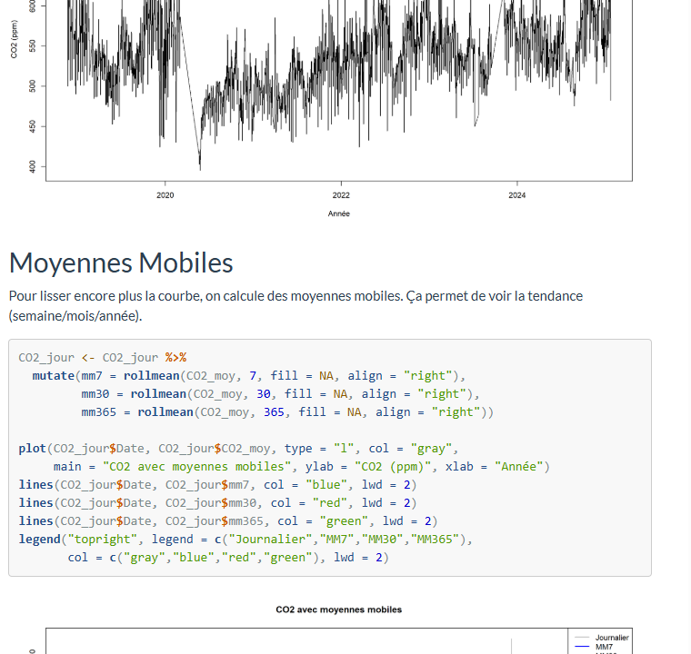
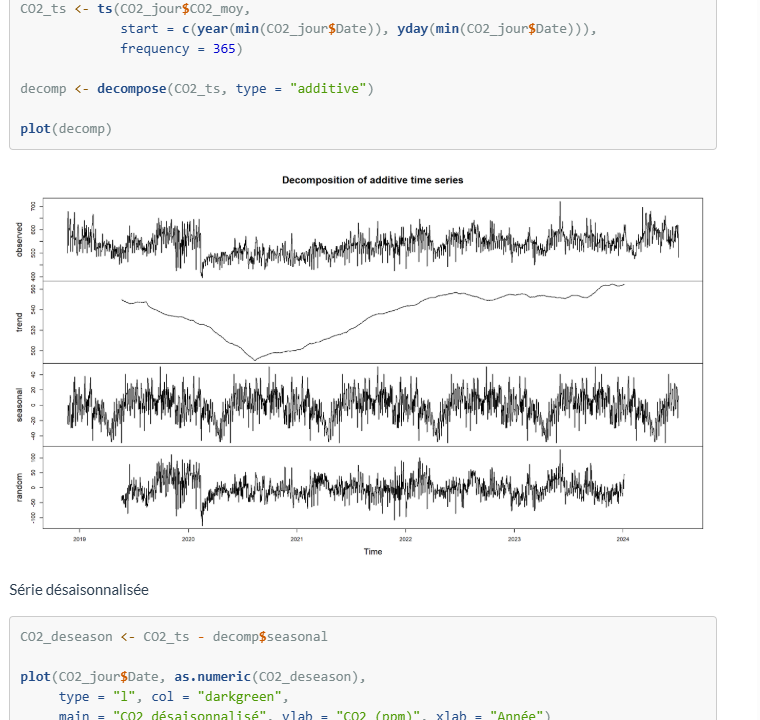

| Nom de la SAE | Description et prévision de données temporelles | |||
| Coéquipiers : | Regis Sognigbe | |||
| Sujet spécifique | Analyse de la pollution à la gare de Châtelet, à partir d'une série temporelle du taux de CO₂. |
| Objectifs |
Décrire l'évolution du taux de CO₂ à la gare de Châtelet. Identifier la tendance et, si présente, la saisonnalité. Choisir un modèle adapté aux séries temporelles (décomposition, lissage…). Réaliser une prévision du taux de CO₂ pour 2025–2026. Interpréter les résultats et discuter les limites du modèle. |
| Livrables | Code R (R Markdown .Rmd), Rapport HTML |
| Compétence | Analyser |
| Apprentissages critiques sollicités | AC22.01 : Prendre conscience de la différence entre modélisation statistique et analyse exploratoire |
| AC22.02 : Saisir la spécificité de l'analyse des données temporelles | |
| AC22.05 : Apprécier les limites de validité et les conditions d'application d'une analyse | |
| Composantes essentielles à respecter | Distinguer une approche exploratoire (description de la série) d'une approche prédictive (lissage, ARIMA). |
| Appliquer les méthodes propres aux séries temporelles (décomposition, désaisonnalisation, moyennes mobiles). | |
| Évaluer les limites du modèle (résidus, intervalles de confiance, conditions d'application). |
| Compétence | Valoriser |
| Apprentissages critiques sollicités | AC23.01 : Saisir l'intérêt de mobiliser de manière proactive des ressources métiers liées à l'environnement |
| AC23.02 : Savoir défendre ses choix d'analyses | |
| AC23.03 : Saisir la nécessité de choisir des indicateurs pertinents pour communiquer sur les résultats | |
| AC23.04 : Prendre conscience de la rigueur requise dans ses productions et dans la communication | |
| Composantes essentielles à respecter | Rendu clair et structuré : plan logique + titres + résultats faciles à lire. |
| Choix d'indicateurs utiles : pas trop, mais ceux qui aident vraiment à comprendre (tendance, prévision, écarts). | |
| Communication des limites : préciser ce que le modèle fait bien et ce qu'il fait moins bien (incertitude, valeurs mal ajustées). |
| Savoirs / connaissances | Savoir-faire | Savoir-être |
|---|---|---|
|
Statistiques de test. Séries temporelles (tendance, saisonnalité, résidus). Lissage exponentiel, moyennes mobiles, décomposition STL. Prédictions et intervalles de confiance. |
Savoir utiliser les outils fournis par le prof (R Markdown, packages ts, forecast). Calculer les moyennes mobiles (MM7, MM30, MM365). Produire un rapport reproductible via R Markdown. |
Se mettre d'accord avec mon binôme (répartition des parties). Gestion du temps (respect des délais). Esprit de rigueur : vérifier les résultats avant de les commenter. |
Ce que je trouve bien réalisé, pourquoi ?
J'ai trouvé que le code R réalisé via R Markdown (Rmd) était un vrai point fort. D'abord, ça permet de produire un rapport propre et lisible automatiquement : le texte, les tableaux et les graphiques se génèrent avec les résultats, donc on évite les copier-coller et les erreurs. Ensuite, c'est reproductible : si on met à jour les données, on relance le script et le rapport se met à jour sans refaire toute la mise en forme. Enfin, c'est plus professionnel : on a un livrable clair, structuré, et cohérent avec l'objectif de prédiction.
Ce que je n'ai pas bien compris ; ce qui serait à améliorer pour une prochaine fois : pourquoi ? comment ?
Le point à améliorer, c'est le rapport : je n'étais pas toujours sûr de ce qu'il fallait expliquer et comment commenter les résultats. Parce que je n'ai pas assez demandé d'avis pendant le travail.
Pour une prochaine fois : demander plus souvent au prof (même juste pour valider le plan ou une partie) ; faire un petit point à mi-parcours ; ajouter des explications simples : ce qu'on a fait, pourquoi, et ce que ça veut dire pour la prédiction du CO₂.

